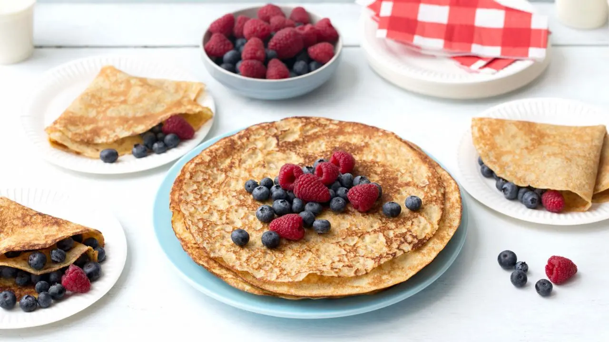

Dette er de nydeligste pannekakene du kan servere!
4 porsjon (8 pannekaker)
Pannekakerøre:
• 4 stk. egg
• 3 dl hvetemel
• 0,5 ts salt
• 5 dl melk
• 1 ss smør
1. Bland mel og salt. Tilsett halvparten av melken. Visp sammen til en tykk og klumpfri røre. Tilsett resten av melken. Visp inn egg. La pannekakerøren svelle i ca. ½ time.
2. Smelt margarin i en god og varm stekepanne. Hell i en øse med pannekakerøre og vend på pannen, slik at røren legger seg i et jevnt lag. Snu pannekaken når den har stivnet på oversiden og blitt gyllenbrun på undersiden.
3. Når pannekaken er stekt på begge sider, brettes den sammen og legges i et ildfast fat med lokk. Pannekakene holder da varmen, slik at alle kan spise sammen.